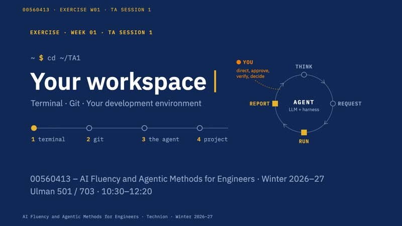
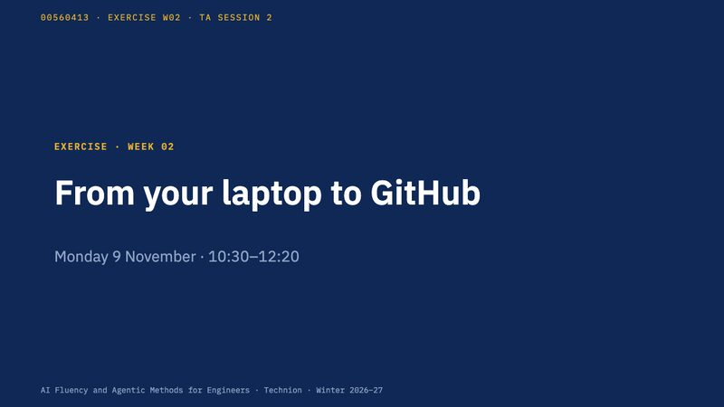

Tutorials
Tutorials
The slides from each exercise session
The tutorials are the weekly exercise sessions, led by the teaching assistants: Monday 10:30–12:30, Ulman 703 and 801, two groups in parallel. Each published week has its slides here, shown in place, with the student handout and the files its activities use. What each week covers, and which milestone it builds toward, is on the Exercises page.
Moving through a deck. Click the slides or Tab to them, then use the arrow keys or the controls at the bottom; move the pointer off the slides to scroll the page again. Open slides full screen gives the deck the whole window. On a narrow screen, such as a phone held upright, the slides open only that way: tap the picture of the title slide.
Later weeks appear here as their slides are published.
Week 1
W01 Environment and git
Environment installation: WSL, and the harnesses; git intro: branches, staging, commit — the basics.

Open slidesActivity files
setup_treasure.shPart 1 · The terminal (the treasure hunt)setup_git_quest.shPart 2 · Git: save points (the Git Quest)project-proposal.mdPart 4 · Your project topic (the proposal template)
The student handout gives the exact curl command that downloads each file, and what to do if the download fails.
Week 2
W02 git, GitHub, and the Setup Gate
The GitHub student package; GitHub and VS Code, a first tour; WSL: a terminal, wsl, code .; Fork your project repository, clone it, switch to develop, in VS Code's Source Control; Your details, your Week 1 proposal and your W02 line: commit and push; Merge develop into main, and resolve a merge conflict (M1); Peer review in pairs: each other's proposal, after a reminder of Week 1's agent loop.

Open slides